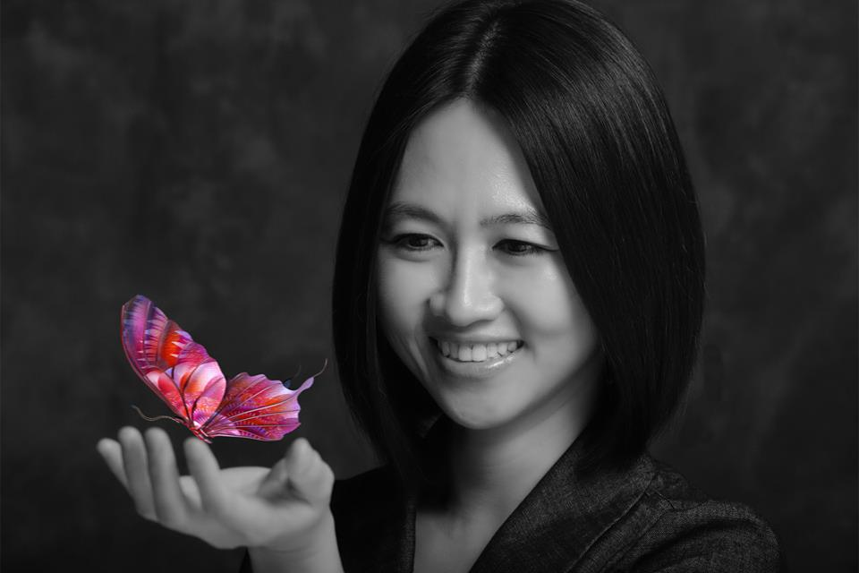

Welcome to the creative side of me. I have a passion for photography and photoshop. I have been taking pictures since 1990 using a film camera. I moved onto digital photography in 2002 and started to learn photoshop on my own. Whenever I see a beautiful image, I study the composition, the lighting. I get inspiration from looking at beautiful images in magazines or on the internet. I enjoy taking pictures of my family, friends, and co-workers. When I was at St. Jude Medical, I used to take pictures of the company picnic and holiday events, like Halloween and Christmas. I always plan ahead before I take pictures of an event; I scout the location in advance, anticipate the moments that can happen, and always have the camera ready. I pay attention to details before I take a picture to make sure the background is not busy and that the people are looking their best. Everyone wants to look good. I also take photo journalism-style pictures to capture the moment.

My original Tachy team when I joined Software group in 2003

My got my own close-knit PLRS team in 2008

My sister,Krystine. Just showing off my photoshop skill.

Krystine again.

I took this picture of my niece, Mimi and her fiance at their engagement party last month.
Back to top of page!